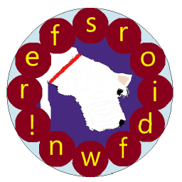

WordSniffer is a simple word game where you pick out the required word from available letters. Dunally Software has developed this Privacy Policy to explain how we collect, use, disclose and transfer your information. By using the application, you consent to the privacy practices described here; please take a moment to familiarise yourself with these practices.
Dunally Software does not have access to any of your data. The app does not communicate with any Dunally Software servers.
WordSniffer includes third-party banner advertisements. These advertisements come from Google AdMob, and are subject to Google's privacy policy, which you can see here.
If you have WhatsApp installed, WordSniffer allows you to send WhatsApp messages to friends to get their help with a clue. WordSniffer only passes information to WhatsApp, and only when you request it; WordSniffer has no access to your WhatsApp contacts. You still need to press "send" within WhatsApp itself to send the message.
